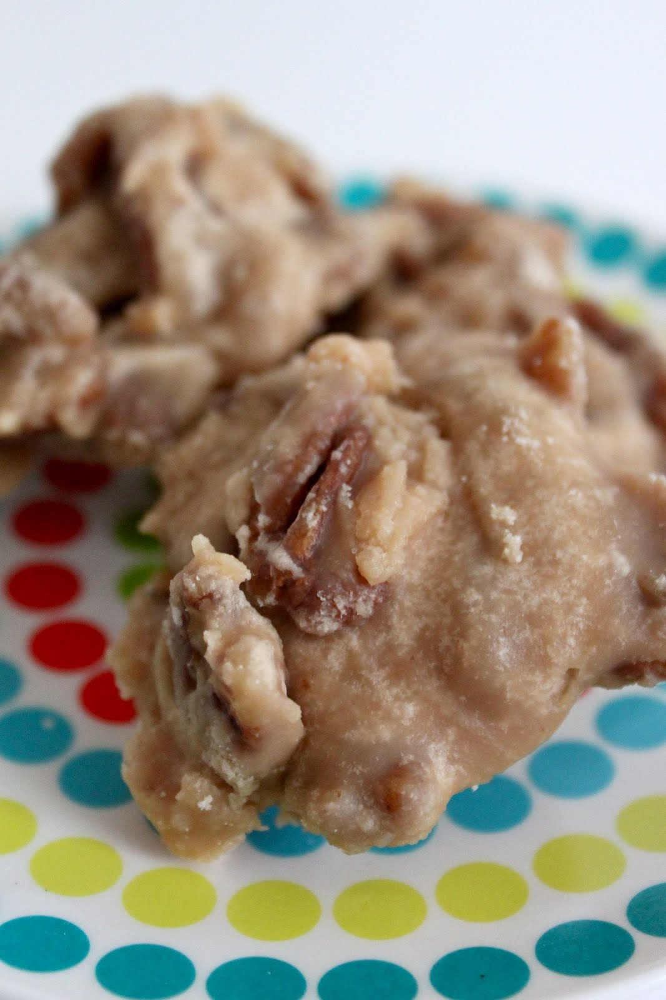

Pralines Recipe

Typical Praline Dish
Pralines are a sweet candy made from pecans and various sugars. They are often made during the winter season as a holiday treat.
Though they are a tasty treat, they are made with obsecne amounts of sugar and should consumed seldomly.
Praline Ingredients
- Pecans
- White Sugar
- Brownn Sugar
- High Fructose Corn Syrup
- Water
- Love
Praline Steps
- First pour water, brown sugar, white sugar, and the high Fructose corn syrup in a pot.
- Heat the pot to a boil while stirring as the pot heats up.